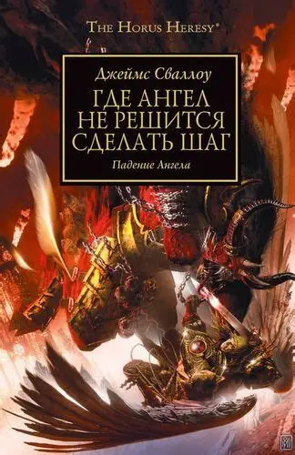
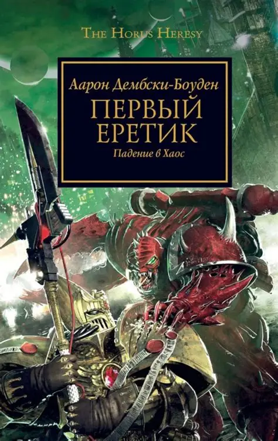
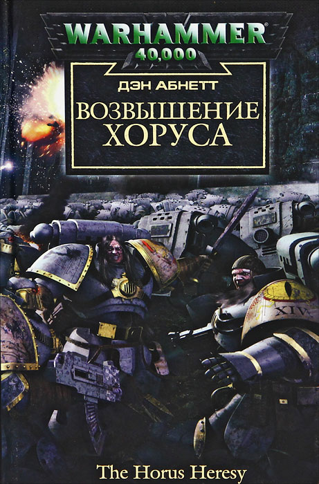
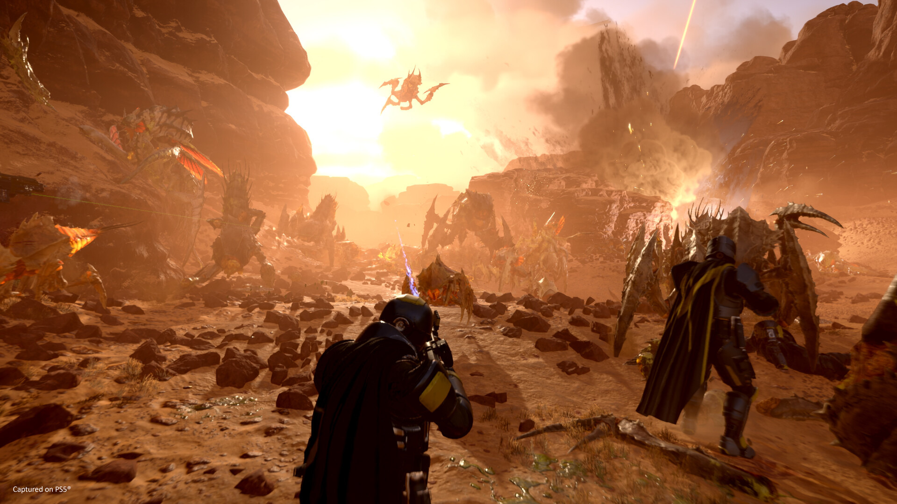
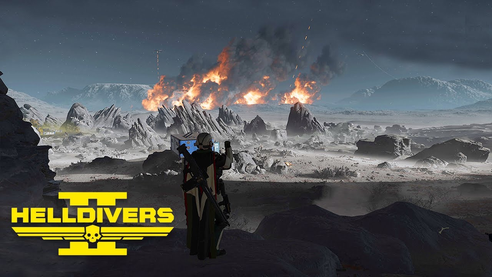
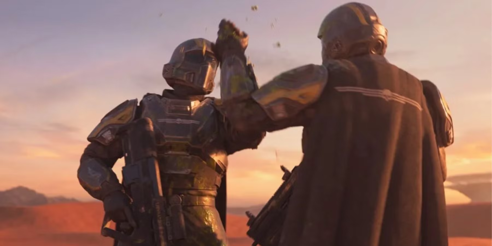
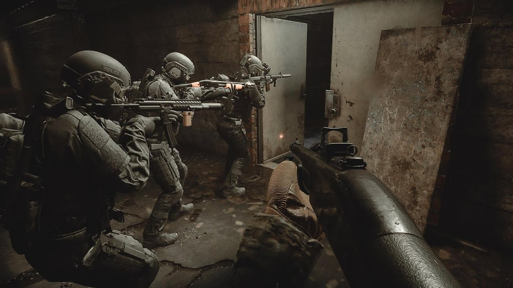
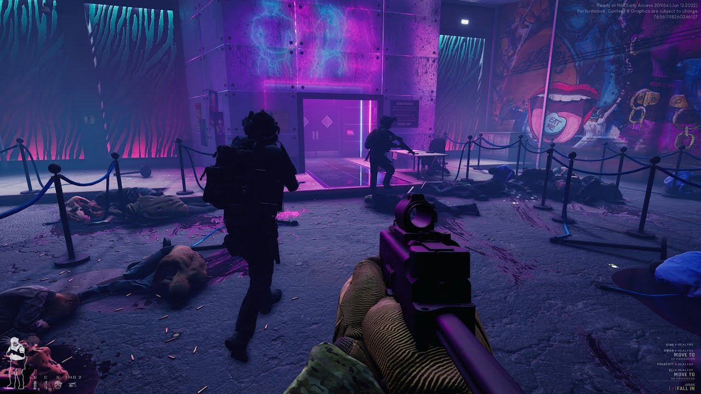
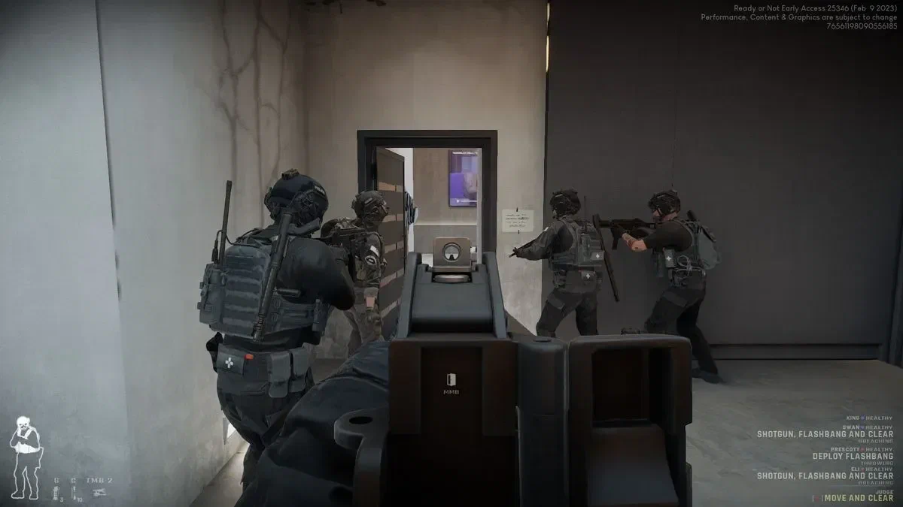

Лучшие книги по вселенной Warhammer 40,000
1. Где ангел не решится сделать шаг...

Книга "Где Ангел не решится сделать шаг" Джеймса Сваллоу считается одной из лучших книг в цикле "Ересь Хоруса" благодаря своему глубокому сюжету, интересным персонажам и множеству сюжетных элементов, которые заставляют читателей продолжать читать дальше.
2. Первый Еретик

Книга "Первый Еретик" считается одной из лучших в цикле "Ересь Хоруса" благодаря своей глубокой и интересной историей, которая исследует темы веры, власти и человеческой души.
3. Возвышение Хоруса

Книга "Возвышение Хоруса" задаёт тон всему циклу: знакомство с Хорусом, Императором, Лунными Волками; показывает мотивации, сомнения; как рушатся идеалы. Без неё многое из того, куда пойдёт Ерес, будет не так остро ощущаться.
Причины поиграть в Helldivers 2
1. Комадная работа

Helldivers 2 предлагает кооперативный геймплей, где игроки должны работать вместе, чтобы преодолеть трудности и выполнить миссии. Это создает уникальный опыт командной работы и взаимодействия.
2. Разнообразие

В игре бесконечно широкий спект миссий: сектора, планеты, вторжения, разные условия и задачи. Это не просто бег с пушкой, это о адаптации к различным условиям и врагам, которых не мало и каждый из них требует своей тактики(коммунисты автоматоны, недемократические жуки и тоталитарные иллюминаты)
3. Сообщество

Прямо сейчас идет война людей с инопланетными расами, где каждый игрок вносит огромный вклад в победу, как просто освобождение сектора, так и освобождение сектора.
Причины поигарть в Ready or Not
1. Тактический шутер

В отличии от большинства шутеров, игра фокусируется не на "беги-и-стреляй", а на реалистичных операциях SWAT: ограниченный запас патронов, реалистичные ранения и стараться задержать всех людей.
2. Атмосфера

Каждая карта — это уникальная ситуация: захват заложников, обезвреживание террористов, зачистка наркопритона, проникновение в офис или магазин.
3. Кооперативное взаимодействие

Игра так же по новому раскрывается если играть с друзьями: легче строить тактику, делить роли, если один ошибется, то проиграет вся команда.